近五年，抗菌肽（antimicrobial peptides, AMPs）生成从早期的 VAE、RNN、GAN，快速走向 Transformer、蛋白语言模型、扩散模型、多目标优化和强化学习。
这篇文章梳理其中几条关键路线，并重点解释：这些模型到底在优化什么，为什么“高抗菌活性”远远不够。
抗生素耐药性正在把新药发现推向一个现实问题：我们不能只靠传统筛选慢慢找分子了。
抗菌肽通常是由几十个氨基酸组成的短肽，很多天然 AMP 具有广谱抗菌、膜破坏、免疫调节等潜力。它们常见的结构和理化特征包括：
但 AMP 设计真正困难的地方，也正来自这些特征。
抗菌活性强的肽，往往更容易破坏膜；能破坏细菌膜，也可能破坏红细胞膜或宿主细胞膜。因此，AMP 设计不是单纯追求“更强”，而是要在抗菌活性、溶血性、细胞毒性、稳定性、可合成性和新颖性之间找到平衡。
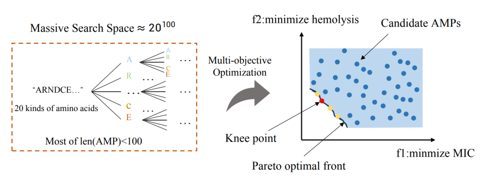
图 1｜AMP 设计中的巨大序列空间、多目标冲突与 Pareto 最优筛选。
这张图很好地概括了 AMP 生成模型面对的三个核心难题：
所以，近五年的 AMP 生成研究逐渐从“生成像 AMP 的序列”，走向了“生成满足多目标约束、并有实验验证潜力的候选分子”。
早期 AMP 生成方法多使用 RNN、VAE、GAN 或潜空间模型。核心思路是：从已知 AMP 中学习序列分布，然后生成新的候选肽，再用分类器或实验筛选。
2022 年的 Graph-Based Active Machine Learning Method for Diverse and Novel Antimicrobial Peptides Generation and Selection 把 RNN 生成模型和 GraphCC 图过滤方法结合起来。
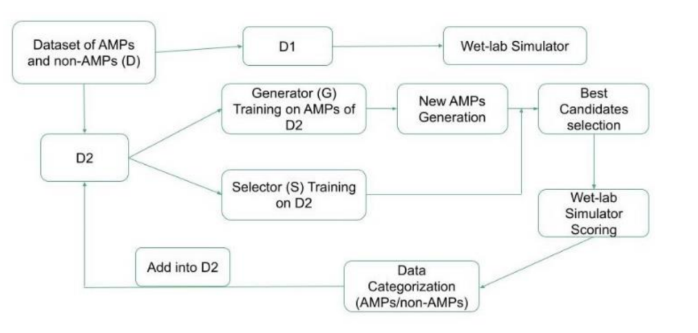
它不是只生成“最高分”的肽，而是试图在多轮实验中减少筛选数量，同时保持候选序列的新颖性和多样性。
这个思路很重要，因为 AMP 生成模型很容易陷入两个问题：
主动学习的价值就在于，它让模型、预测器和实验反馈形成闭环：模型先生成候选，实验验证一小部分，再把结果反馈给下一轮模型。
同样在 2022 年，LSSAMP: Accelerating Antimicrobial Peptide Discovery with Latent Structure 进一步指出，只看序列还不够。
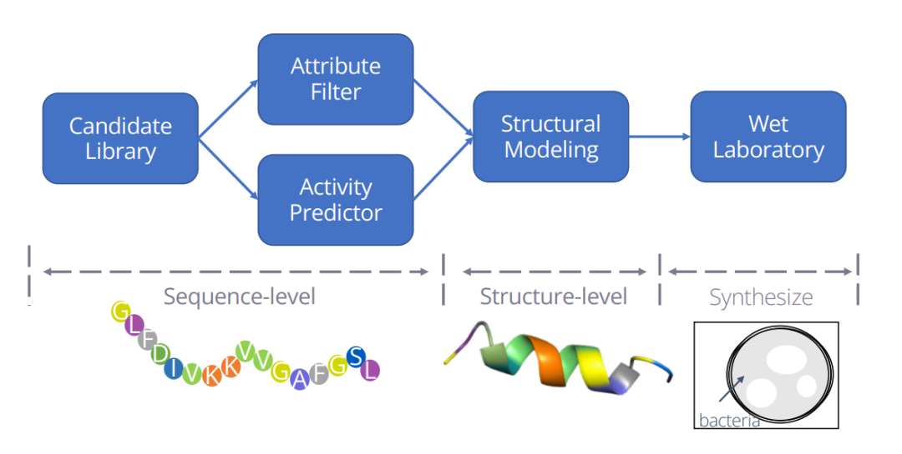
AMP 的功能和二级结构关系很大，尤其是 α 螺旋、β 折叠、无规卷曲比例、疏水面分布等。LSSAMP 把序列属性和结构信息一起编码进潜空间，再从潜空间中采样生成候选 AMP。
这类方法的关键贡献是：
生成模型不能只学氨基酸字符串，还应该学 AMP 背后的结构和功能约束。
LSSAMP 还做了湿实验验证，21 条候选中有 2 条表现出较强抗菌活性。这个比例并不夸张，但对于从巨大序列空间中筛选 AMP 来说，已经说明“结构约束潜空间”有实际价值。
随着蛋白语言模型和 Transformer 方法发展，AMP 生成也从“小模型 + 手工特征”逐渐进入 foundation model 阶段。
2024 年的 MoFormer: Multi-objective AMP Generation Based on Conditional Transformer 使用条件 Transformer 和多模态描述符做多目标 AMP 生成。
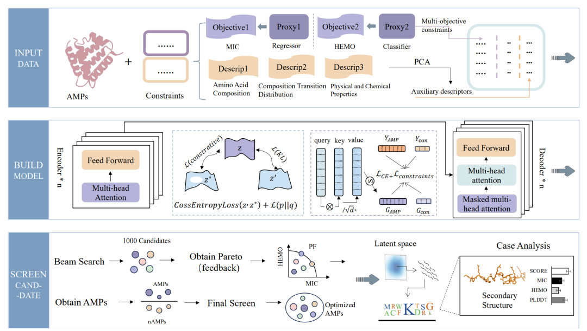
它不只优化抗菌活性，而是同时考虑：
MoFormer 的代表性思路是：把目标性质作为条件输入，让 Transformer 在生成时就朝指定属性靠近，而不是生成之后再粗筛。
这意味着 AMP 生成从“unconditional generation”走向“conditional design”。
2024 年的 AMP-Designer: A foundation model approach to guide antimicrobial peptide design 是近年非常值得关注的一篇。
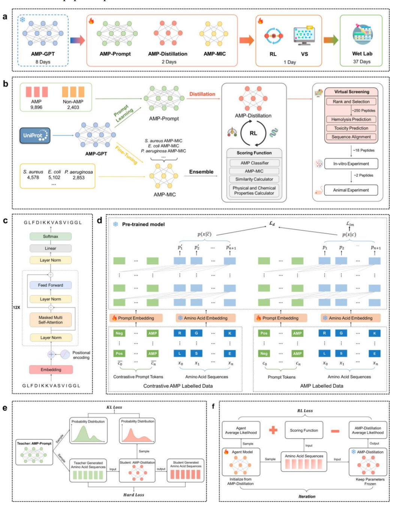
它把 LLM/foundation model、对比提示调优、知识蒸馏和强化学习组合起来，用于快速设计具有多种期望性质的 AMP。
这篇文章的重要性不只是用了大模型，而是它展示了一个更接近真实药物发现的流程：
AMP-Designer 在 11 天内设计出 18 条候选 AMP；随后的体外验证显示大多数候选有抗菌活性，阳性率达到 94.4%；其中两条候选表现出较强活性、低溶血、人血浆稳定性和较低耐药诱导倾向，并在小鼠肺部感染模型中降低细菌负荷。
这里的关键变化是：
模型不再只是“生成器”，而是变成了一个可以接受任务条件、对齐实验目标、快速迭代候选的设计系统。
扩散模型在图像生成中表现惊艳之后，也开始进入肽设计。
2023 年的 MMCD: A Multi-Modal Contrastive Diffusion Model for Therapeutic Peptide Generation 把序列和结构两个模态放进扩散框架，同时生成肽序列和结构。
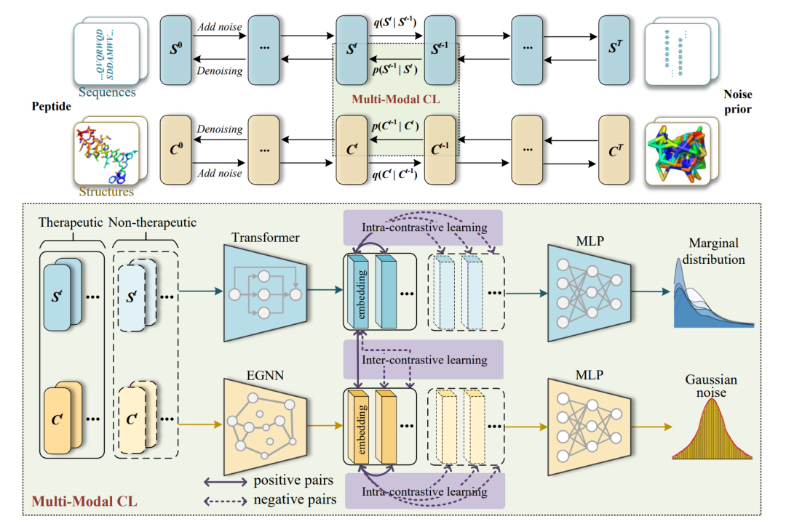
它不只针对 AMP，也面向抗癌肽等治疗肽。评估指标包括：
这类工作说明，治疗肽生成不能只停留在一维序列层面。很多时候，真正决定功能的是序列如何折叠、如何形成功能性表面、如何与膜或靶标相互作用。
2025 年的 OmegAMP: Targeted AMP generation through controlled diffusion with efficient embeddings 更明确地面向 AMP 可控生成。
它的核心思路是：不是生成之后再粗暴筛选，而是在生成过程中加入条件控制。
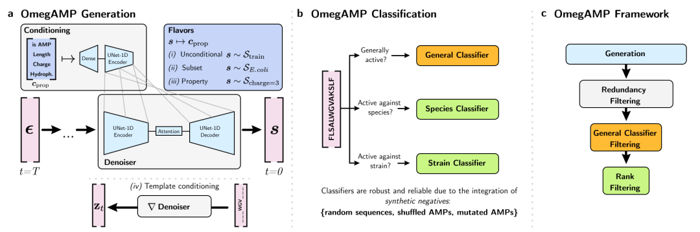
图 2｜OmegAMP 的可控扩散生成、分类器和候选筛选框架。
OmegAMP 包含三个核心模块：
OmegAMP 的控制条件很有代表性，包括：
它还特别强调分类器的可靠性。因为 AMP 领域很容易出现“分类器假阳性”：模型以为是 AMP，但实验里不一定有效。OmegAMP 使用随机序列、打乱序列和突变序列作为 synthetic negatives，迫使分类器不要只学氨基酸组成，而要学更真实的序列模式。
这类工作说明，扩散模型的优势不只是“能生成”，而是能把生成过程变成一个可调控的设计过程。
AMP 设计真正困难的地方，是多个目标彼此冲突。
比如：
所以强化学习和多目标优化开始变得重要。
2024 年的 HMAMP: Hypervolume-Driven Multi-Objective Antimicrobial Peptides Design 是强化学习和多目标优化方向的代表工作。
它把 AMP 设计看作多目标优化问题，同时考虑 MIC、溶血性、毒性等属性，并使用 hypervolume maximization 来扩展 Pareto 前沿。
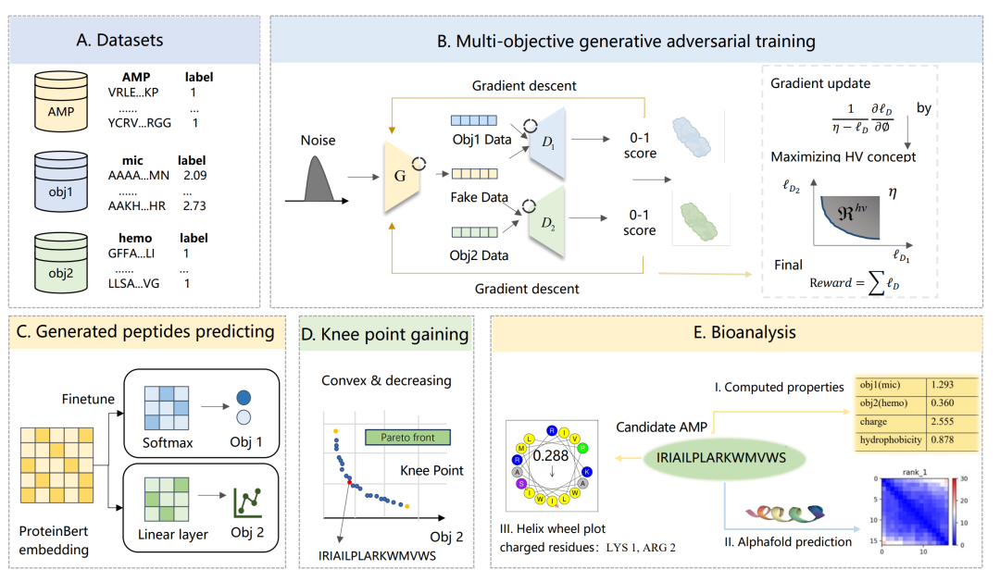
图 3｜HMAMP 的多目标 GAN、强化学习、Hypervolume 和 Pareto 筛选流程。
HMAMP 的流程可以拆成几步：
这里有两个概念特别重要。
第一个是 Pareto front。在多目标优化里，如果一个候选在某个指标上更好，同时没有在其他指标上更差，它就可以支配另一个候选。最终那些不能被其他候选支配的点，就构成 Pareto 前沿。
第二个是 hypervolume。它衡量 Pareto 前沿覆盖的目标空间体积。简单说，hypervolume 越大，说明模型找到的候选集合在多个目标上的综合表现越好。
这比单目标打分更接近真实药物设计。真实候选不是“某一个指标最高”，而是“多个指标之间最值得妥协”。
2026 年的 ProDCARL: Reinforcement Learning-Aligned Diffusion Models for De Novo Antimicrobial Peptide Design 把扩散生成模型和强化学习对齐结合起来。
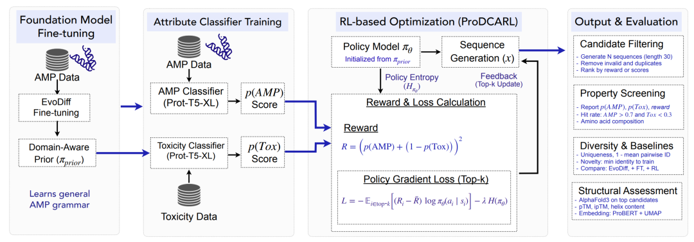
图 4｜ProDCARL 的扩散模型微调与强化学习对齐流程。
它的流程是：
ProDCARL 的 reward 可以理解为：
生成器每生成一条序列，评价器就打分。如果它更像 AMP、毒性更低，就获得更高 reward；如果它只是骗过了一个指标，或者生成重复序列，就会受到约束。
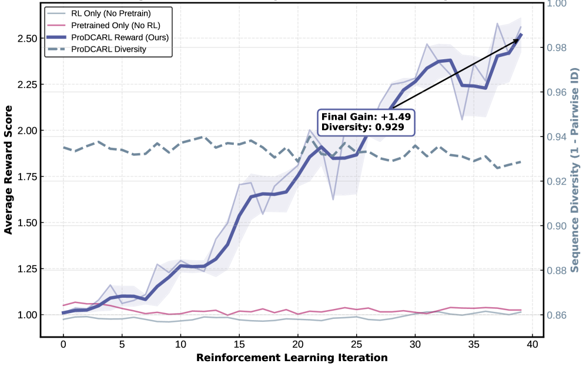
图 5｜ProDCARL 强化学习过程中的 reward、AMP score 和多样性变化。
图源：ProDCARL，Figure 5。
论文报告，ProDCARL 把平均 AMP score 从 fine-tuning 后的 0.081 提升到 0.178；在 pAMP > 0.7 且 pTox < 0.3 的联合阈值下，高质量命中率达到 6.3%；同时保持较高多样性。
这篇文章的价值在于，它把 AMP 生成中的一个核心问题讲得很清楚：
生成模型本身只会学分布，强化学习才让它面向目标优化。
不过也要注意，ProDCARL 主要还是 in silico 结果，最终仍需要湿实验验证。对于 AMP 设计来说，预测器分数永远不能完全替代 MIC、溶血和细胞实验。
2025 年的 ApexAmphion: A deep reinforcement learning platform for antibiotic discovery 更进一步，把大规模蛋白语言模型和 PPO 强化学习结合起来，构建肽抗生素发现平台。
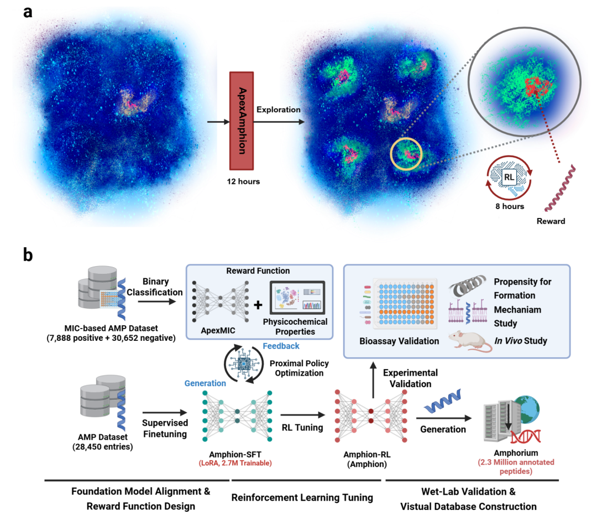
它使用 6.4B 参数蛋白语言模型作为基础模型，再用复合 reward 同时优化 MIC 预测和可微理化性质。
这类工作代表一个趋势：RL 不再只是小模型上的技巧，而是在大模型生成空间中做目标对齐。
未来 AMP 设计可能越来越像给模型一个明确任务：
然后模型给出一批候选，评价器、优化器和实验平台继续闭环。
2026 年后，一些工作开始把 AMP 生成包装成“多智能体科学发现系统”。
MAC-AMP: A Closed-Loop Multi-Agent Collaboration System for Multi-Objective AMP Design 使用多智能体 LLM 框架，把任务描述、候选生成、模拟 peer review、自适应强化学习和多目标评价串起来。
AMPGAN v3: Agentic Discovery of Non-Canonical Antimicrobial Peptides 则把生成空间扩展到非天然氨基酸、D-氨基酸和 N/C 端修饰。
这个方向很重要，因为真实肽药物通常不只使用天然 L-氨基酸。D-氨基酸、末端酰胺化、环化和其他修饰都可能提高稳定性、抗蛋白酶降解能力和成药性。
这说明 AMP 生成正在从单一模型竞赛，进入“模型 + 评价器 + 优化器 + agent + 实验反馈”的系统工程阶段。
如果只看 pAMP 分数，很容易被模型骗。更合理的评估体系至少包括七类指标。
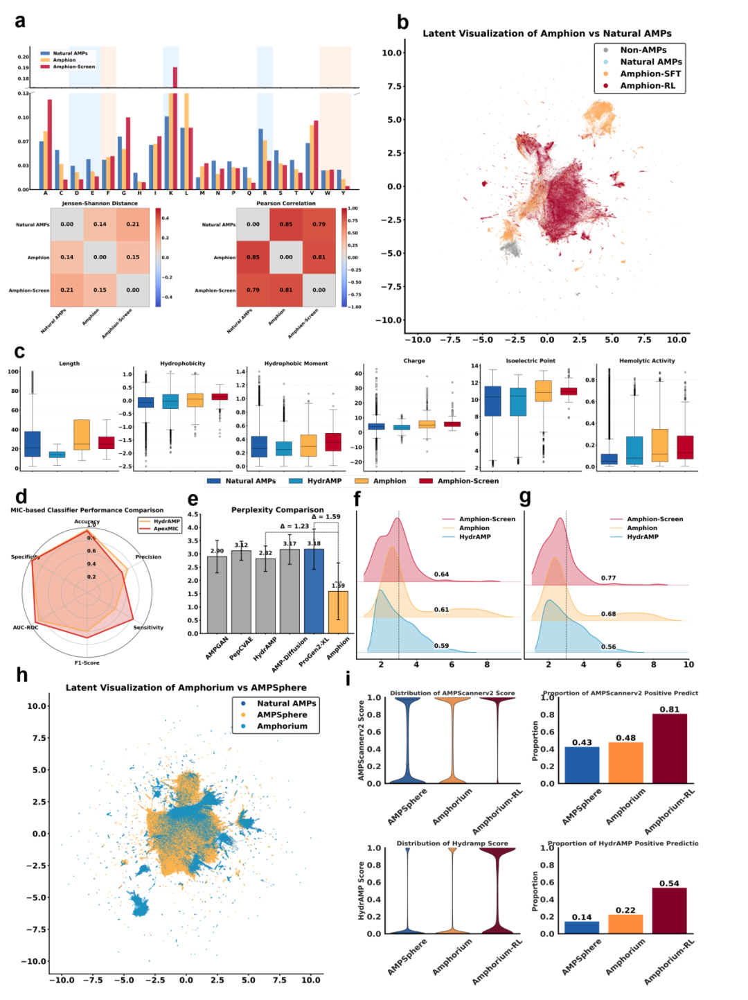
这类指标回答一个问题：生成的肽到底有没有抗菌潜力？
常见指标包括：
其中 MIC 是湿实验中最核心的指标之一。MIC 越低，说明抑制细菌生长所需浓度越低。
抗菌肽最大风险之一是“杀菌也伤宿主”。
常见指标包括：
一个候选 AMP 如果 MIC 很低，但溶血性很强，实际价值会大打折扣。
这类指标最接近 AMP 的机制直觉。
常见指标包括：
典型 AMP 往往需要正电荷、适中疏水性和明确两亲性。但这些性质不能无限拉高，因为更强的膜破坏能力往往也意味着更高的宿主毒性风险。
这类指标回答一个机器学习问题：模型是真的学会了设计，还是在记忆训练集？
常见指标包括：
如果生成序列和训练集高度相似，说明模型可能只是“背答案”。如果序列过于多样但完全不像可行 AMP，则说明模型离真实分布太远。
AMP 的机制和结构密切相关，所以结构评价越来越重要。
常见指标包括：
尤其是膜活性 AMP，疏水面和亲水面的空间分布往往比单纯氨基酸组成更关键。
多目标模型和 RL 模型常用这些指标衡量整体优化效果：
其中 hypervolume 和 Pareto front 是 HMAMP 这类工作的核心指标。
最终，只有 wet-lab 才能真正说明模型设计是否走出了预测器自嗨。
常见验证包括：
这批文章共同揭示了一个趋势：AMP 生成已经不再是“生成一个 pAMP 很高的序列”这么简单。
真正有价值的 AMP 设计，需要同时满足：
未来 AMP 生成模型的胜负，很可能不取决于谁的单一分类器分数最高，而取决于谁能更好地完成：
多目标折中 + 实验闭环。
AI 不是在替代抗菌肽实验，而是在重新组织实验前的搜索空间：让科学家不再从天文数量的序列里盲筛，而是从更小、更合理、更有机制解释的候选集合中出发。